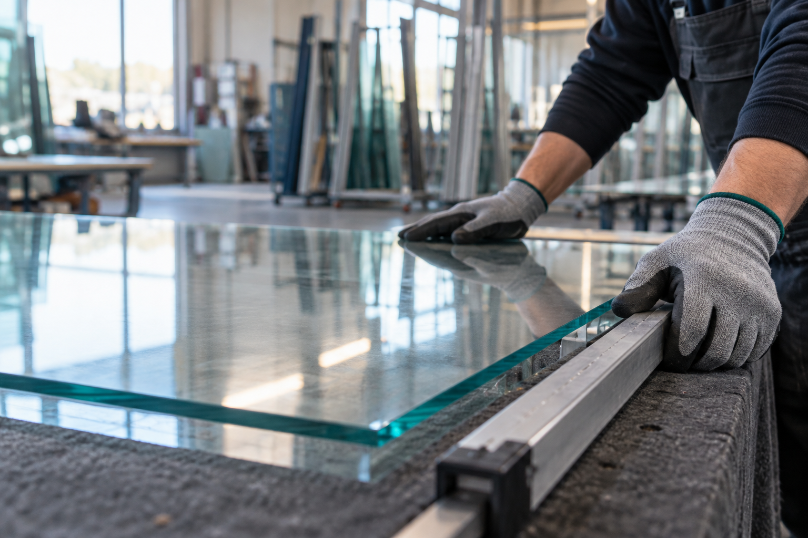
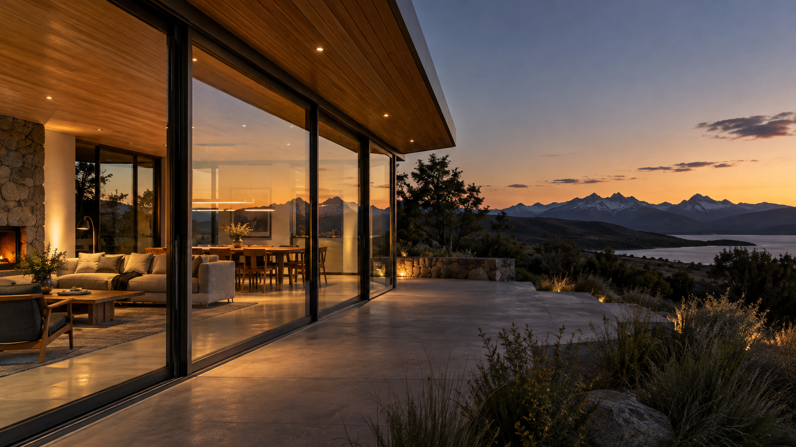

Aberturas de aluminio
Ventanas y puertas para integrar luz, ventilación y uso cotidiano.

GENERAL ROCA · RÍO NEGRO
VIDRIO ROCA S.R.L.
Soluciones en vidrio y carpintería de aluminio para hogares, comercios y obras, con 50 años de experiencia en General Roca.
NUESTRA HISTORIA
Vidrio Roca S.R.L. trabaja con soluciones en vidrio y aluminio para proyectos residenciales y comerciales. Cada consulta abre una conversación sobre medidas, materialidad y terminación.
Conocé más sobre nosotros →NUESTROS SERVICIOS
Especialidades a confirmar y completar junto al equipo de Vidrio Roca.
Ventanas y puertas para integrar luz, ventilación y uso cotidiano.
Alternativas, espesores y aplicaciones a definir según cada proyecto.
Soluciones para baños y espacios interiores, sujetas a confirmación.
Proyectos para conectar espacios interiores y exteriores.
TRABAJOS REALIZADOS
Galería lista para incorporar fotografías propias autorizadas.

CLIENTES Y MARCAS
No publicamos clientes, organizaciones ni logotipos hasta contar con autorización expresa.
CONTACTO
Contanos tu idea. Al continuar se abrirá WhatsApp con el mensaje listo: revisalo y presioná Enviar.
Dr. Adolfo Alsina 620, R8332 Gral. Roca, Río Negro, Argentinainfo@vidrioroca.com · provisorioWhatsApp · pendiente de confirmación